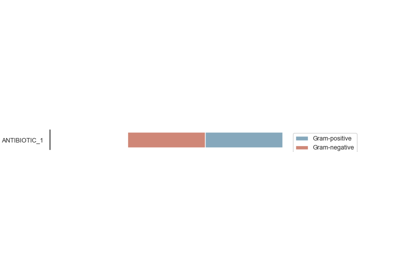

Tutorials
Guide step by step
Outline of the process and steps required to compute various metrics.


Computing AMR metrics
Examples with the most important metrics.

Spectrum of Activity (ASAI)


Metrics
Examples computing metrics.


Time-series analysis (regression)
Examples using regression and time-series analysis.


Statistical tests (wrappers)
Examples computing and interpreting statistical tests.